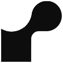

CastIQ
Features
Catch Logging
Record detailed catch data: time, species, weight, length, temperature, bait & more.
Visual Insights
Explore data visualizations for: species frequency, catch history, bait effectiveness and average weight & length.
Searching
Search & filter catches dynamically to analyze specific data.
Fully Responsive
Optimized layouts for desktop and mobile for use on the water or at home.
Tech Stack
Frontend
Languages and libraries used to build the UI and interactive features.
Backend
Server-side languages, frameworks, and hosting services.
Render
Database
Data storage and management technologies.